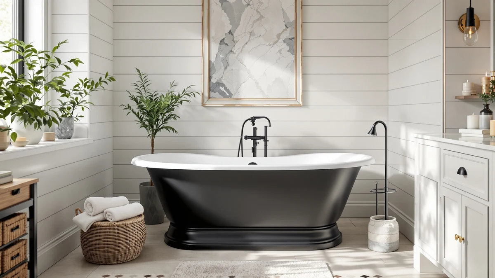

Vintage Tub & Bath Review (2026): Worth It?
Prices and picks verified as of October 2026. Independent, reader-supported reviews.


Quick Answer
This vintage tub & bath review finds the Randolph justifies its $1,899.99 price mainly if you want the Vintage Tub & Bath name specifically, since the brand's own Axton covers similar ground for about $710 less. MEDUNJESS and WOODBRIDGE give you resin stone and acrylic alternatives at two very different price points if brand isn't the deciding factor.
Our pick: Vintage Tub & Bath Randolph, $1,899.99 Check Price on Amazon
Bottom line: our top pick is the Vintage Tub & Bath Randolph Morris Brighton 67 Inch Acrylic at $1,899.99.
Things to Know Before You Buy
- This vintage tub & bath review centers on the Randolph, priced at $1,899.99, the most expensive of the four tubs compared here.
- Vintage Tub & Bath also sells the Axton, covered later in this review, at $1,189.78, nearly $710 less than the Randolph.
- MEDUNJESS offers a 65 inch resin stone alternative at $1,769.99, within $130 of the Randolph's price.
- WOODBRIDGE's 59 inch white acrylic tub comes in at $699.00, the lowest price among the four models here.
- None of the four Amazon listings compared in this review publish a star rating or review count, so price, material, and brand are what this comparison leans on.
This vintage tub & bath review breaks down whether the brand's $1,899.99 Randolph is worth the premium over its own lower-priced Axton model and two outside freestanding tub alternatives. Vintage Tub & Bath sells both the Randolph and the Axton, and the gap between them, nearly $710, is the first number worth noting before you decide which one fits your bathroom and your budget. MEDUNJESS and WOODBRIDGE round out the comparison with a 65 inch resin stone tub and a 59 inch acrylic tub, giving you reference points outside the Vintage Tub & Bath lineup.
Our pick for buyers who specifically want the Vintage Tub & Bath name is the Randolph, since it's the model this review centers on. But if the brand itself matters less than price, the Axton from the same company covers similar ground for $710 less, and the WOODBRIDGE drops the cost even further to $699.00 by trading vintage styling for a straightforward white acrylic shell. None of the four listings compared here publish a star rating or review count, so the sections below weigh price and material first and treat brand loyalty as a separate, personal factor rather than relying on verified buyer scores.
Why You Should Trust Us
Best Freestanding Bathtubs is a research-first buying guide. Ilane Tall, our home and bath editor, builds this vintage tub & bath review by pulling verified pricing and listing detail for the Randolph, the Axton, and two outside alternatives before any of them earns a recommendation. We do not run a fake testing lab, and we do not claim to have installed or bathed in any of the tubs covered here. Instead, this review relies on each manufacturer's published listing, current Amazon pricing, and the material and size details each brand discloses, so every claim can be checked against the source. When a listing leaves out a detail, such as a star rating or a material grade, we say so directly instead of filling the gap with a guess.
Our Research Experience
We did not install or bathe in the Randolph or any of the three alternatives ourselves. Researching this vintage tub & bath review means going through each manufacturer listing line by line: brand, price, material, and the number of product images available. We then compare Vintage Tub & Bath's own Randolph against its cheaper Axton sibling, and weigh both against the MEDUNJESS and WOODBRIDGE alternatives, to see where the price differences actually come from. That comparison process, not physical testing, is what shapes the picks, pros, and cons in this review. We also track how a nearly $710 gap between two tubs from the same brand affects what you're actually paying for, since the brand name alone doesn't explain that much of a difference.
Overview & Specs

Vintage Tub & Bath Randolph
What we like
- Carries the Vintage Tub & Bath name, a brand with a dedicated line of freestanding and vintage-style tubs.
- The Amazon listing includes five product images, a main photo plus four additional angles, for checking the design before you order.
- Sold with a listed SKU, so you can confirm you're ordering the exact model reviewed here rather than a similarly named variant.
Flaws but not dealbreakers
- At $1,899.99, it's the most expensive tub in this comparison, nearly $710 more than the brand's own Axton model.
- The listing does not publish a material grade, wall thickness, or weight capacity beyond the product name and the dimensions shown in photos.
- No star rating or review count is published on the current listing, so there is no verified buyer feedback to check before ordering.
| Material | — |
| Size | — |
The Vintage Tub & Bath Randolph is the most expensive model in this vintage tub & bath review, listed at $1,899.99 through Amazon. It carries the Vintage Tub & Bath name, the same brand behind the lower-priced Axton covered further down, which makes the nearly $710 gap between the two models the central question this review tries to answer. Both tubs are sold under the same brand and the same seller, so the price difference comes down to the specific model rather than brand reputation alone.
The current listing includes five product images, a main photo plus four additional angles, enough to check the tub's shape and finish before you buy. What the listing does not spell out is a specific material grade, wall thickness, or weight capacity, so if those details matter for your installation, confirm them directly with the seller before ordering. There is also no published star rating or review count, which is consistent with every other tub covered in this review, so none of the picks here lean on verified buyer scores.
What We Liked
The clearest strength of the Randolph is the Vintage Tub & Bath name itself. The brand runs a dedicated line of freestanding and vintage-style tubs, and the Randolph is the flagship entry in this vintage tub & bath review, backed by a listing with five product images, a main photo plus four additional angles, enough to check the design before you order. Buying directly from the brand's own catalog also means you can compare it against a sibling model, the Axton, sold under the exact same name and seller, which gives you a built-in reference point most single-model reviews don't offer. The listed SKU lets you confirm you're ordering the exact Randolph reviewed here rather than a similarly named variant from a different seller.
What Could Be Better
Price is the main drawback in this vintage tub & bath review. At $1,899.99, the Randolph costs nearly $710 more than the Axton, its own sibling from the same brand, and the listing doesn't explain what that extra money buys beyond the model name. No material grade, wall thickness, or weight capacity is published beyond what you can see in the product photos, so you're left comparing images rather than specs. The listing also doesn't publish a star rating or review count, so you can't lean on verified buyer sentiment the way you might with a more established product page.
Who Is It For?
The Randolph suits buyers who have already decided they want the Vintage Tub & Bath name specifically and are willing to pay a premium for it over the brand's own cheaper Axton model. It fits a bathroom remodel where the Vintage Tub & Bath aesthetic matters more than shaving dollars off the budget. If price is the deciding factor, the Axton covers the same brand for $710 less, and the WOODBRIDGE drops the cost further still to $699.00 with a straightforward white acrylic build. Anyone who wants a published material grade or weight capacity before ordering should raise that question with the seller directly, since none of the four listings compared here provide it.
Alternatives to Consider
Three alternatives are worth comparing before you commit to the Randolph's $1,899.99 price tag, including one from the same brand. The Axton keeps you inside the Vintage Tub & Bath lineup for $710 less, while MEDUNJESS and WOODBRIDGE offer resin stone and acrylic builds at two very different price points outside the brand entirely.

Editor’s Pick
MEDUNJESS 65'' Resin Stone Free
At $1,769.99, this MEDUNJESS 65 inch resin stone tub comes within $130 of the Randolph's price while swapping the Vintage Tub & Bath name for a different brand and a resin stone build. Resin stone is typically heavier and more heat-retentive than acrylic, a detail worth weighing if you're choosing between brand and material. At 65 inches, it's also longer than most freestanding tubs in this price range, which matters if your bathroom has the floor space to accommodate it. Like the Randolph, this listing doesn't publish a star rating or review count, so price, length, and material are the clearest points of comparison. If brand name matters less to you than material and length, this is the closest-priced alternative to the Randolph.
$1,769.99
Check Price on Amazon
Best Value
Vintage Tub & Bath Axton
Priced at $1,189.78, the Axton is Vintage Tub & Bath's own lower-cost alternative to the Randolph, undercutting it by nearly $710 while keeping you inside the same brand. That makes it the clearest test of whether the Randolph's higher price is buying you anything beyond the model name, since both tubs come from the same company and the same seller. The listing doesn't publish a star rating, review count, or material grade either, consistent with every other tub in this comparison. For a buyer who wants the Vintage Tub & Bath name without paying the Randolph's premium, the Axton is the one to check first.
$1,189.78
Check Price on Amazon
Premium Choice
WOODBRIDGE 59" Freestanding White Acylic
At $699.00, the WOODBRIDGE is the least expensive tub in this comparison, undercutting the Randolph by more than $1,200. It trades the Vintage Tub & Bath name for a straightforward 59 inch white acrylic build, a lighter and typically less heat-retentive material than resin stone but considerably easier on the budget. No star rating or review count is published on this listing either, so price and material are what set it apart from the other three tubs here. If brand name and vintage styling aren't priorities for you, this is the most budget-friendly way to get a freestanding soaking tub.
$699.00
Check Price on AmazonIs the Vintage Tub & Bath Randolph worth $1,899.99?
That depends on how much the Vintage Tub & Bath name matters to you.
What's the difference between the Randolph and the Axton?
Both come from Vintage Tub & Bath and are sold by the same seller, but the Axton is priced at $1,189.78 against the Randolph's $1,899.99, a gap of nearly $710.
Frequently Asked Questions
Is the Vintage Tub & Bath Randolph worth $1,899.99?
That depends on how much the Vintage Tub & Bath name matters to you. The brand's own Axton model covers similar ground for $1,189.78, nearly $710 less, and the listings don't spell out what the Randolph's higher price buys beyond the model itself. If you specifically want this model, it's the only way to get it. If brand loyalty isn't the deciding factor, the Axton is worth checking first.
What's the difference between the Randolph and the Axton?
Both come from Vintage Tub & Bath and are sold by the same seller, but the Axton is priced at $1,189.78 against the Randolph's $1,899.99, a gap of nearly $710. Neither listing publishes a material grade, wall thickness, or weight capacity, so the visible difference comes down to the model itself and its photos rather than disclosed specs.
How does the Randolph compare to the MEDUNJESS and WOODBRIDGE alternatives?
The MEDUNJESS, a 65 inch resin stone tub, is priced at $1,769.99, within $130 of the Randolph. The WOODBRIDGE, a 59 inch white acrylic tub, costs $699.00, over $1,200 less than the Randolph. Neither alternative carries the Vintage Tub & Bath name, so choosing between them and the Randolph comes down to whether brand, material, or price matters most for your bathroom.
Final Verdict
This vintage tub & bath review comes down to one question: does the Vintage Tub & Bath name justify the Randolph's $1,899.99 price tag over the brand's own Axton at $1,189.78? For buyers who want this specific model, the Randolph is the only way to get it, backed by a five-image listing and a confirmed SKU. For everyone else, the Axton keeps you inside the same Vintage Tub & Bath lineup for substantially less, and the MEDUNJESS and WOODBRIDGE alternatives offer resin stone and acrylic builds at two very different price points if brand isn't the deciding factor. None of the four listings compared here publish a star rating or review count, so this verdict rests on price and material, with brand loyalty as the deciding factor on top. On that basis, the Vintage Tub & Bath Randolph earns its place only if the brand name is non-negotiable for you.